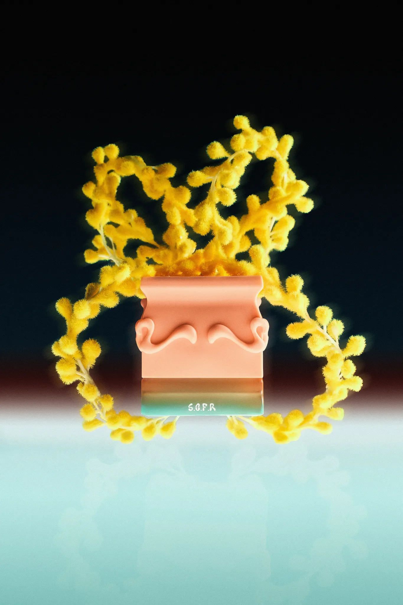
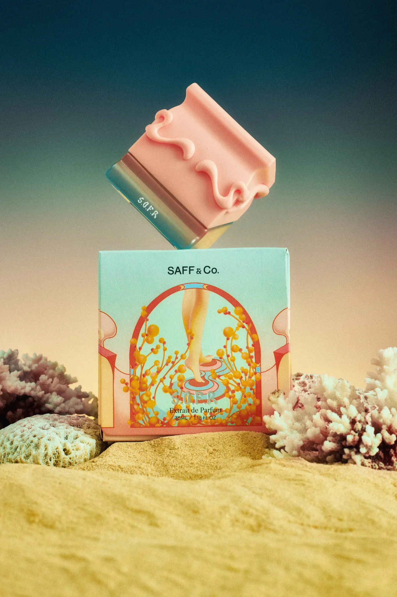
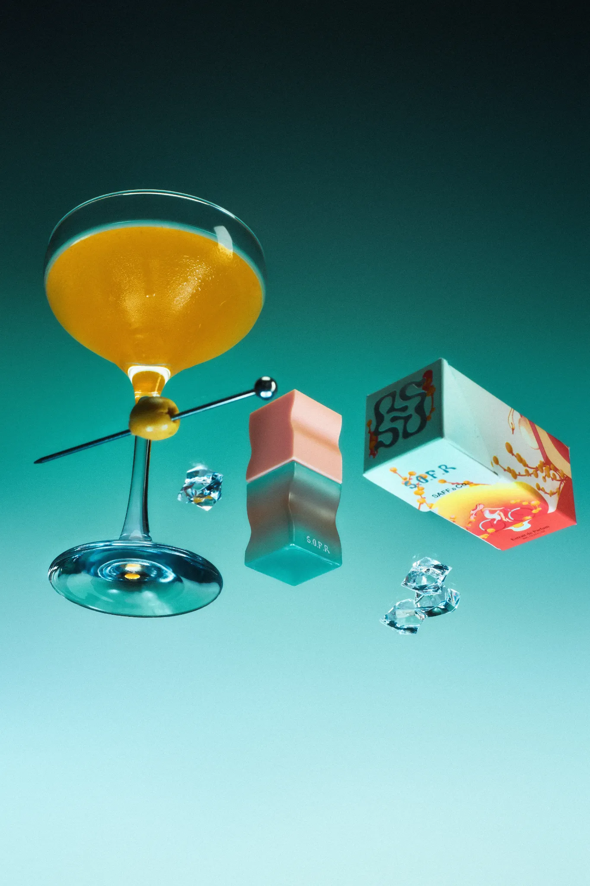

Typography and fragrance may seem like two very different worlds, but they share the same purpose: creating a memorable experience.
Packaging is often the first physical point of contact between a product and its audience. In this article, I explore how Wakaba, a display font by Bykineks, complements the visual identity of Saff & Co.'s SOFR packaging, and how type can help communicate the feeling, story, and personality of a brand.
1. Introduction: The Intersection of Scent and Typography
Scent is intangible, while typography is visual. Yet both can establish a mood before the audience fully experiences the product. For a fragrance brand, packaging has to translate an invisible sensory experience into something immediately recognizable.
The SOFR packaging by Saff & Co. approaches that challenge through a playful and expressive visual language. Wakaba becomes part of that language, extending the character of the packaging through its distinctive letterforms.
2. Typographic Anatomy: The Concept Behind Wakaba
Wakaba was designed to capture fluid motion. Its design language is wavy, cool, relaxed, and organic, with undulating curves that give the typeface a distinctive visual rhythm.
The rounded forms and relaxed terminal curves create a high-impact presence while keeping the overall character approachable. This makes Wakaba particularly suitable for display applications such as branding, editorial work, lifestyle graphics, and packaging.

Wakaba supports 82 languages, extending the same expressive design language beyond a single writing system. Its primary role, however, remains display typography, where its forms can be experienced at a larger scale.
3. Visual Synergy: Why Wakaba Fits Saff & Co. SOFR
Saff & Co.'s SOFR has an experimental, undulating bottle, soft peach hues, and a clean fragrance profile described through floral, musky, and powdery notes. These qualities create a visual direction that is soft, expressive, and contemporary.
Wakaba complements that identity through three main points.
Organic Form Harmony
The fluid curves in Wakaba echo the soft, undulating forms of the SOFR bottle and packaging. Rather than introducing a rigid typographic structure, the letterforms participate in the same visual movement as the physical product.

Evoking the Scent Visually
Fragrance cannot be seen, so visual elements have to suggest its character. Wakaba's playful curves and organic movement help translate the softer qualities associated with SOFR into a recognizable graphic expression.
Maintaining Premium Legibility
Despite its expressive character, Wakaba remains legible when used as display typography. This balance allows the typeface to contribute personality without competing with the product itself.

4. Professional Ethics: Respecting Intellectual Property in the Creative Industry
Good design practice is not only about the final visual result. It also includes respecting the rights behind the creative work that makes the result possible.
Saff & Co.'s Head of Packaging initiated formal communication with Bykineks to secure the rights to use Wakaba for packaging production. This process reflects an important part of professional creative collaboration: typefaces, illustrations, photography, and other design assets have licensing terms that should be respected when they move into commercial production.
For independent type designers and foundries, this kind of communication is an essential part of sustaining a healthy creative industry.
5. Conclusion
Seeing Wakaba transition from a digital type concept into a tangible premium retail asset demonstrates how typography can participate in a brand system beyond the screen.
The distinct organic personality of Wakaba adapts naturally to the expressive forms, colors, and atmosphere of Saff & Co. SOFR. In this context, typography is not simply information printed on a package. It becomes part of the product's visual and sensory identity.
6. Explore Wakaba Font
Wakaba is a display typeface designed by Bykineks, supporting 82 languages and optimized for desktop use, packaging, branding, editorial applications, and commercial display.